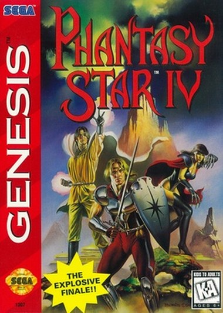

Phantasy Star IV's hidden world map New
The unused atlas still opens in the USA ROM. Motavia and Dezolis drawn by the game, with working scrolling, a link to an unused item, and two labels that need fixing.
Read the investigation ▸
Home › Phantasy Star IV
Sega Mega Drive · 1993

Phantasy Star IV: The End of the Millennium came out on the Mega Drive in Japan in December 1993 and reached North America in February 1995, developed and published by Sega, directed by Rieko Kodama, Toru Yoshida and Kiyoshi Takeuchi. It was the last Phantasy Star of the 16-bit line and the one the series is usually judged by.
It is a first-person-battle role-playing game of the old school with the corners filed off. You walk a party of up to five across Motavia, fights are fought against a row of enemies drawn on the screen, and every round you queue one command per character before anything happens. The order in which those commands go off is rolled from agility, and if the right techniques land next to each other in that order they fuse into a Combination Attack, a single blow built from all of them. The manual promised fifteen of those; the players found fourteen.
Around the battles there is a lot of what made the game loved: macros that let you replay a set of commands with one press, a story told in manga-style panels over the action, a cast that arrives and leaves on the plot's schedule rather than yours, and a thousand years of series history that the game expects you to half remember.
The plot starts small, two hunters taking a job at a school where monsters have appeared, and ends with the fate of a solar system. What keeps the game worth taking apart is the machinery underneath: a battle engine with tables for everything, and a complete disassembly that lets you read those tables instead of guessing at them.
The unused atlas still opens in the USA ROM. Motavia and Dezolis drawn by the game, with working scrolling, a link to an unused item, and two labels that need fixing.
Read the investigation ▸
The manual says there are fifteen Combination Attacks and players have found fourteen. The tables in the ROM settle it, and on the way they show how a combo is actually detected: a four-slot window on the turn order, an enemy in the wrong place, and a combo whose whole window of opportunity is one dungeon long.
Read the teardown ▸
In the drawer
The enemy AI instruction set, the damage formula with real numbers, and an enemy HP display for the battle window.